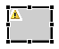
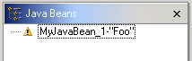
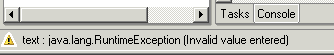
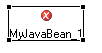

During normal development, exceptions are sometimes thrown by the Java beans. The visual editor displays icons and visual markers to indicate exceptions.
For example, when a visual class is instantiated or when property values
are applied, a visual class might throw an exception. If an exception is thrown
when a property value is applied, the Java bean is recreated and all of the
other valid properties are applied. A warning sign is shown in the Design
view and the Java beans view to indicate that an exception occurred


When you select a component that has a warning, the status line will show
you the property that threw the exception as well as the exception message.
For example, if the button's text property threw a runtime exception the status
bar would be:

When the exception is thrown during the application of a property value, the Java bean is recreated and the property ignored. The warning sign indicates that the representation of the live Java bean, as shown in the Design view or the Properties view, is incomplete, as the errant property has not been applied.
In addition to exceptions thrown when property values are applied, there may be an exception thrown during instantiation of the Java bean. In this case it is not possible to partially create the Java bean, as was done for bad property values, so no live Java bean will be present. To indicate this, for errors thrown during instantiation of the Java bean, a red x is shown in the Design view and Java Beans view. You can select the Java bean to see the exception message in the status line.

A "Too complicated" error, represented by a blue circle with an exclamation point, occurs when the initialization string for a property is too complicated for the visual editor to understand.
Parent topic: Testing and debugging in the visual editor